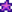
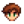
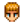
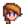

Arkadaşlık
Arkadaşlık, Pelikan Kasabası'nın sakinleri ile kazanılır. Arkadaşlık ilerledikçe kasabalının diyalogları daha arkadaşçıl olur, kalp olayları denilen ara sahneler gerçekleşir, kasablılar posta ile hediyeler gönderir ve çıkılabilen/evlenilebilen kasabalılar ile evlilik mümkün hale gelir.
Arkadaşlık Mekanikleri
Puan Sistemi
Her kasabalının arkadaşlık puanı 10 kalplik bir gösterge ile gösterilir; oyuncunun eşi veya oda arkadaşının 14 kalplik bir göstergesi bulunur. Bir buket verilmemiş bir evlilik adayının son iki kalbi gri olarak gözükür.

Her kalp 250 arkadaşlık puanıdır. Bütün kalp göstergeleri oyun menüsündeki topluluk sekmesinde görülebilir.
Kasabalılar ile konuşurken portrelerinin yanında bir daire belirir. Rengi, oyuncunun kasabalı ile olan kalp sayısını belirtir. Mavi 0-1, yeşil 2-3, kırmızı 6-7, mor daire 8-9 ve mor bir yıldız da 10-14 kalpte belirir. Eğer evlenilmemişse fareyi üstüne getirmek 10 üzerinden sahip olunan kalp sayısını gösterir.

Kasabalılar ile arkadaşlık puanları şöyle arttırılabilir:
- Her gün onlarla konuşmak (normalde +20; kasabalı spor yapmak veya kamerayı kullanmak gibi özel bir animasyonun ortasındaysa +10)
- Bir öge teslim etme görevini tamamlamak (+150)
- Sevilen, hoşlanılan veya tepki verilmeyen bir hediye vermek (bkz.: Hediyeler)
- Bir haftada maksimum olan iki hediye vermek (+10; ödül, sonraki pazar günü gelir)
- Sinemaya davet etmek (sevilirse +200, hoşlanılırsa +100)
- Sinemada onlar için atıştırmalık satın almak (sevilirse +50, hoşlanılırsa +25) (bkz.: Sinema)
- Kalp olaylarında yapılan belirli seçenekler
- Eşi öpmek (+10, yalnızca günün ilk öpücüğü için); Krobus oda arkadaşıysa geçersiz
Arakdaşlık puanları şöyle azaltılabilir:
- Günlük bir selamlama vermemek (bkz.: Azalma)
- Sevmedikleri veya nefret ettikleri bir hediye vermek (bkz.: Hediyeler)
- Bir sapan ile vurmak (vuruş başına -30)
- Kalp olaylarında yapılan belirli seçenekler
- Eğer oyuncunun 7 kare yakınındaysalar bir Çöp Kutusunu karıştırmak (-25; Linus da ise artar: +5). Onları gördüklerini belirtmek için konuşurlar. Eğer oyuncunun 7 kare yakınında birden fazla kasabalı varsa yalnızca bir tanesi konuşur ve arkadaşlık kaybedilir.
Kalp göstergesi en az 2 kalpse oyuncu, o kasabalının yatak odasına girebilir. Bu sayede kasabalı ile konuşmak ve hediyeleşmek daha kolay olabilir. Bir kere açıldığında kalıcı olarak açılır ve 2 kalbin altına düşse de girilebilir.
Arkadaşlık puanları evlenilemez kasabalılar için maksimum 2749'a (11 kalpten bir puan eksik) çıkarılabilir.
Evlilik adaylarında gösterge 8 kalpte durur. Romantik ilgiyi belirten buket verilmedikçe arttırılamaz. Yapıldıktan sonra gösterge tamamen açılır ve on kalbe ulaşana dek devam edilebilir (buket verilmeden önce 8 kalbe ulaşılsa da 9 kalbin bir tık altına ulaşılabilir (2249 puan) ve buket verilene dek de azalmaz). Herhangi ve bütün evlilik adaylarına buket verilebilir ve arkadaşlık seviyesi 10 kalbe çıkarılabilir ve evlilik teklifi edilmediği sürece buket verilen diğer eşler ile olan ilişkiye de zarar verilmez (eğer evlilik teklifi yapılırsa, evlenilmişse veya bir oda arkadaşı varsa eşinin/oda arkadaşının kıskanç olma ihtimali vardır). Onlardan ayrılmak ilişki göstergelerini direkt olarak 5 kalbe indirir ama yine de 8 kalbe tekrardan çıkartılabilir.
Bütün bekarlar ile çıkmak bir Grup 10-Kalp olayı ile sonuçlanabilir, arkadaşlığı etkilemez ancak oyuncunun sonraki hafta boyunca onlara hediye vermesini engeller.
Evlilik teklifi edildiğinde bütün evlilik adaylarının kalp göstergeleri diğer bütün kasabalıların göstergeleri gibi görünür çünkü artık onlar bir evlilik adayı değildir. Yine de topluluk sekmesinde onlara daha önce bir buket verilip verilmediği gösterilir. Ek olarak, eğer bir diğer evlilik adayına daha önce buket verilmişse evlilikten sonra hâlâ romantik kalp olayları gerçekleşebilir. Evlilik seremonisinden sonra eşin göstergesi bir kez daha genişler ve 14 kalbe kadar gider. Ardından arkadaşlık puanları maksimum 3749'a çıkarılabilir (15 kalpten bir puan az).
Azalma
Eğer kalp göstergeleri tamamlanmış değilse bir kasabalı ile konuşmadıkça her gün arkadaşlık puanları yavaşça azalır.[1] Eğer oyuncu evliyse oyuncu, eşi ile 14 kalbe sahip olsa bile azalma hiçbir zaman durmaz. Bir kasabalıyı Telefon ile aramak, konuşmak olarak sayılmaz.
| İlişki | Azalma oranı | Azalmanın durduğu zaman |
|---|---|---|
| Evli | -20/gün | Asla |
| Buket verilmiş | -10/gün | 10 kalp |
| Buketten önce | -2/gün | 8 kalp |
| Evlenilemez | -2/gün | 10 kalp |
Hediyeler
Her kasabalıya günde bir hediye, haftada iki hediye verilebilir; topluluk sekmesindeki kutucuklar ile işaretlenir. Topluluk sekmesindeki bölümlerine tıklayarak "Hediye Günlüğü" kısmında kasabalının hediye tercihleri görülebilir. Bu günlük; verilen hediyelerin, Gizli Notlar ve aileleri ve arkadaşları ile olan diyaloglar ile öğrenilen hediye tercihlerinin kaydını tutar.
Hediyeleşme sınırı için: hafta pazar günü başlar. Eğer bir kasabalıya bir haftada iki hediye verilirse pazar sabahı uyanıldığında kalp göstergeleri ekstra bir 10 arkadaşlık puanı ile artar.
Bir kasabalıya o hafta iki hediye zaten verilmişse bile eğer doğum günleri ise yine bir hediye verilebilir.
Eşe haftanın her günü bir hediye verilebilir ancak herhangi bir arkadaşlık artışı veya azalması yaşanmaz.[2]
Her kasabalı, bireysel hoşlanılan ve sevilmeyen şeylere sahiptir, bunlar da bir hediye verildiğinde arkadaşlık puanının ne kadar artacağını veya azalacağını belirler. Arkadaşlık puanı doğum günlerinde (×8 olarak) ve Kış Yıldızı Şöleni gizli hediyeleşme etkinliğinde (×5 olarak) katlanır:
| Hediye Türü | Normalde | Kış Yıldızı'nda (×5) | Doğum Gününde (×8) |
|---|---|---|---|
| Sevilen | +80 | +400 | +640 |
| Hoşlanılan | +45 | +225 | +360 |
| Tepki Verilmeyen | +20 | +100 | +160 |
| Sevilmeyen | -20 | -100 | -160 |
| Nefret Duyulan | -40 | -200 | -320 |
Eğer bir hediye hoşlanıldıysa veya sevildiyse kazanılan puan, ögenin kalitesi ile de etkilenir:
| Kalite | Katlayıcı | Etki | |
|---|---|---|---|
| Normal | ×1 | +%0 | |
| Gümüş | ×1.1 | +%10 | |
| Altın | ×1.25 | +%25 | |
|  | İridyum | ×1.5 | +%50 |
Verilen herhangi bir günde normal kalitede sevilen bir öge hediye etmek her zaman iridyum kalitede hoşlanılan bir ögeyi hediye etmekten daha fazla puan verir.[2] Hoşlanılan ve sevilen hediyeler için denklem Etkinlik Katlayıcısı x Tercih x Kalite Katlayıcısı şeklindedir; Etkinlik Katlayıcısının değeri 1 (herhangi bir günde), 5 (oyuncunun Kış Yıldızı alıcısı ise) veya 8'dir (doğum günlerinde); Tercihnin değeri 80 (sevilen hediyelerde) veya 45'tir (hoşlanılan hediyelerde); Kalite Katlayıcısının değeri 1, 1,1, 1,25 veya 1,5'tir (Tepki verilmeyen, sevilmeyen ve nefret duyulan hediyeler için bu denklem yalnızca Etkinlik Katlayıcısı x Tercih şeklinde olur). Tek bir hediyeden kazanılabilecek en yüksek arkadaşlık puanı doğum günlerinde iridyum kalitede sevilen bir hediye vermektir, bu da 960 puan, yani 4 kalbe denk gelir.
Hediye Tercihi Diyalogları
Eğer oyuncunun bir kasabalı ile olan arkadaşlık seviyesi en az 1 kalpse kasabalı, aile üyeleri veya arkadaşlarından birinin nefret duyulan veya sevilmeyen bir hediye tercihi hakkında bir diyalog belirtebilir. Aşağıda kasabalıların hangi aile üyesi veya arkadaşları ile ilgili bir hediye tercihi diyaloğu gösterebileceğini gösteren bir tablo bulunmaktadır. Tabloya dahil edilmeyen kasabalılar asla hediye tercihleri ile ilgili bir diyalog göstermez.
| Kasabalı | Şunun için diyalog gösterebilir: | |
|---|---|---|
| Aile | Aile Olmayan | |
 Alex |
||
 Kent |
||
 Jodi |
||
Nefret duyulmayan ama sevilmeyen bir hediye olmasına rağmen taş, bir hediye tercihi diyaloğunda yer alabilir.
Kalp Olayları
Her kasabalı ile arkadaşlık kazanmak çeşitli olayların kilidini açar (gereksinimler için her kasabalının kendi makalesini inceleyin). Bazı olayları kalıcı olarak kaçırmak mümkün olsa da çoğu olay herhangi bir zamanda (bazı zaman kısıtlamaları ile) görüntülenebilir. Bazı kalp olaylarında diyalog seçenekleri olsa bile herhangi biri ile arkadaşlık kazanılmaz veya azalmaz. Ancak belirli kalp olaylarında da olayın içinde bulunan kasabalı ile olan arkadaşlık artabilir veya azalabilir. Tek bir kalp olayından kazanılabilecek en fazla arkadaşlık puanı Linus'un 8 kalp olayından +250 ve kaybedilebilecek en fazla arkadaşlık puanı da Penny'nin 8 kalp ve 10 kalp olaylarından 1500'dür.
Romantizm
- Ana makale: Evlilik
Bazı kasabalılar ile oyuncu, romantizm yaşayabilir (bkz.: evlilik adayları). Oyuncu, uyugn bir kasabalı ile sekiz kalbe ulaştığında oyuncu onlara bir buket vererek dokuz ve onuncu kalplerin kilidini açabilir. Oyuncu, uygun bir kasabalı ile on kalbe ulaştığında oyuncu onlara bir Denizkızı'nın Kolyesi vererek evlilik teklifi yapabilir, zaten kasabalı da her zaman kabul edecektir. Alternatif olarak 10 kalbe ulaşıldığında Krobus'a Boşluk Hayaleti'nin Kolyesi verilebilir ve bu da onu bir oda arkadaşı olarak taşınmasını sağlar, aynı zamanda Krobus da bunu her zaman kabul edecektir.
Oyuncunun eşi veya oda arkadaşı olduğunda kasabalı, oyuncunun evine taşınacak ve arkadaşlık göstergeleri on dört kalbe genişleyecektir. 12,5 kalbe (3125 puan) ulaşıldığında kasabalı, oyuncuya bir yıldızkaydı verir.
Görevler
- Ana makale: Görevler
Oyunun başındaki Talimatlar görevi tamamlandığında oyuncunun 28 kasabalı ile olan arkadaşlık puanı 100 artar (Büyücü bu kasabalılara dahil değildir).
Bazı Hikaye Görevleri ve Özel İstek Görevleri, belirli kasabalılar ile olan arkadaşlığı arttırır.
Bir Öge Teslim Etme Görevi tamamlamak isteyen kasabalı ile arkadaşlığı arttırır.
Festivaller
- Ana makale: Festivaller
Festivallerde kasabalılar ile konuşmak festival olmayan bir günde verilen puan ile aynı oalrak 20 arkadaşlık puanı verir. Şu üç festival, kasabalıların arkadaşlık puanına özel olarak etki edebilir:
- Çiçek Dansı'nda oyuncunun dans ettiği kasabalı, 250 puan (bir kalp) arkadaşlık kazanır.
- Luau; Sandy, Büyücü, Krobus ve Cüce dışındaki bütün kasabalılar ile arkadaşlık arttırır veya azaltır. Bu, oyuncunun çorbaya eklediği malzemeye bağlıdır.
- Oyuncunun Kış Yıldızı Şöleni'ndeki gizli hediye arkadaşı, normal hediyenin arkadaşlık puanı değerinin 5 katını alır.
Ek olarak, kasabalılara Akşam Pazarı'nda hediye vermek festival olmayan bir günde/yerde verilen arkadaşlık artışı kadar artış sağlar.
Duyuru Panosu Yığınları
- Ana makale: Yığınlar
Bütün Duyuru Panosu yığınlarını tamamlamak, oyuncunun evlenilemez kasabalılar ile olan arkadaşlığını iki kalp (500 puan) arttırır. Not edilmelidir ki bu yalnızca tanışılan evlenilemeyen kasabalılar için olur. Oyuncu menüsünde "Topluluk" sekmesinde gözükmeyen ve isimleri "???" olarak beliren kasabalılar bu 500 puanı elde edemez.
Oyuncunun Cüce ile 500 puan kazanabilmesi için Cüce dili bilmesine gerek yoktur. Bunun aksine hediyelerin Cüce ile olan arkadaşlığı etkilemesi için Cüce dilinin anlaşılabilir olması gerekir.
Evrensel Hediyeler
- Ayrıca bkz.: Tüm Hediyelerin Listesi
Aşağıda evrensel olarak sevilen, hoşlanılan, tepki verilmeyen, sevilmeyen ve nefret duyulan bütün ögelerin bir listesi bulunmaktadır. Not edilmelidir ki bazı kasabalıların evrensel tercihlerin aksine bireysel tercihlerini yaptıkları istisnalar bulunur.
Yumurtalar, Süt, Meyve ve çoğu Toplanılabilir Ögeler kasabalıya göre değişir ve burada dahil edilmemiştir.
Not edilmelidir ki Dinozor Yumurtaları bir hediye edilebilir yumurta olarak değil, Eser olarak kabul edilir.
Evrensel Sevilenler
Bu, neredeyse her kasabalının bir hediye olarak almayı sevdiği ögelerin listesidir. Bu ögeler ilişkiye en çok puanı (80) verir ancak elde etmeleri zor olabilir.
Sevilen bir hediye verildiğinde kasabalı genelde bir kalp diyalog baloncuğu ile yanıt verir. 
Evrensel Sevilenler İstisnaları
 Haley, Prizma Parçasından nefret eder.
Haley, Prizma Parçasından nefret eder. Penny, Tavşan Ayağından nefret eder.
Penny, Tavşan Ayağından nefret eder.
Evrensel Hoşlanılanlar
Bir sevilen hediyeden daha az arkadaşlık puanı sağlasa da bir hoşlanılan hediye arkadaşlığı 45 puan arttırır (sevilen bir hediyenin yarısı) ve elde edilmeleri daha kolay olur.
- Bütün Zanaat Ürünleri (Evrensel sevilmeyen olan Yağ ve evrensel nefret duyulan Boşluk Mayonezi hariç.)
- Bütün Yemekler (Evrensel tepki verilmeyen olan Sahanda Yumurta ve Ekmek; evrensel nefret duyulan Gizemli Çörek ve Deniz Köpüğü Tatlısı hariç.)
- Not edilmelidir ki çoğu yemek belirli kasabalılarda istisnalara sahiptir.
- Bütün Çiçekler (Evrensel nefret duyulan olan Haşhaş hariç.)
- Bütün Toplanılabilen Mineraller (Kasabalıya göre değişen Kuvars hariç.)
- Bütün Meyve Ağaçları Meyveleri (Meyve Ağacı meyvesi olmayan meyve tercihi için kasabalıya göre değişen tercihler olan Muz ve Mango hariç.)
- Bütün Değerli Taşlar (Evrensel olarak sevilen Prizma Parçası hariç.)
- Bütün Sebzeler (Eğreliotu dahil; evrensel tepki verilmeyen olan Şerbetçi Otu, Çay Yaprakları ve Buğday; evrensel sevilmeyen olan Öğütülmemiş Pirinç hariç.)
 Akçaağaç Pekmezi
Akçaağaç Pekmezi Piña Colada
Piña Colada Yaşam İksiri
Yaşam İksiri
Evrensel Hoşlanılanlar İstisnaları
Aşağıda bütün Evrensel Hoşlanılanlar İstisnalarını barındıran her Kasabalının listelendiği bir tablo bulunmaktadır. (Ayrıca bkz.: Tüm Hediyelerin Listesi)
Evrensel Tepki Verilmeyenler
Aşağıda kasabalılardan tepki verilmeyen bir yanıt sağlayan ve arkadaşlığa 20 puan sağlayan ögelerin bir listesi bulunmaktadır. Bazı istisnalar bulunur.
Evrensel Tepki Verilmeyenler İstisnaları
 Caroline, Çay Yapraklarından hoşlanır.
Caroline, Çay Yapraklarından hoşlanır. Elliott, Ördek Tüyü ve Mürekkepbalığı Mürekkebini sever.
Elliott, Ördek Tüyü ve Mürekkepbalığı Mürekkebini sever. Emily, Yünden hoşlanır.
Emily, Yünden hoşlanır. Evelyn, Deniz Tarağı ve Mercandan nefret duyar.
Evelyn, Deniz Tarağı ve Mercandan nefret duyar. Harvey; Ördek Tüyünden hoşlanır, Ekmek sevmez; Mercan, Notilus Kabuğu ve Renkli Kabuktan nefret duyar.
Harvey; Ördek Tüyünden hoşlanır, Ekmek sevmez; Mercan, Notilus Kabuğu ve Renkli Kabuktan nefret duyar. Leah; Yermantarı sever, Sahanda Yumurta sevmez, Ekmekten nefret duyar.
Leah; Yermantarı sever, Sahanda Yumurta sevmez, Ekmekten nefret duyar. Leo; Ördek Tüyü sever, Notilus Kabuğu ve Renkli Kabuktan hoşlanır, Şerbetçi Otundan nefret eder.
Leo; Ördek Tüyü sever, Notilus Kabuğu ve Renkli Kabuktan hoşlanır, Şerbetçi Otundan nefret eder. Maru, Yermantarından nefret eder.
Maru, Yermantarından nefret eder.- Penny; Ördek Tüyü ve Yün sevmez, Şerbetçi Otundan nefret eder.
 Sandy, Yünden hoşlanır.
Sandy, Yünden hoşlanır.
Evrensel Sevilmeyenler
Aşağıda hediye olarak evrildiğinde arkadaşlığı 20 puan azaltan ögelerin bir listesi bulunmaktadır.
- Bütün Yapı Materyalleri -- Pil, Kil, Lif, Kereste, Taş ve Yün
- Bütün Eserler
- Bütün Bombalar
- Bütün Üretilen Kaplamalar ve Yollar
- Bütün Çitler
- Bütün Gübreler
- Bütün Balıklar (Evrensel tepki verilmeyen olan Deniz Tarağı ile evrensel nefret duyulan olan Sazanbalığı ve Salyangoz hariç)
- Bütün Jeot Mineralleri
- Bütün Jeotlar
- Bütün Tohumlar Meyve Ağacı Fidanları, Çay Fidanı, Meşe Palamudu, Akçaağaç Tohumu ve Çam Kozalağı dahil
- Bütün Fıskiyeler
- Bütün Olta Takımları
- Çeşitli Kazılan/Metal Şeyler -- Kemik Parçası, Köz Parçacığı, Kömür, Bakır Külçesi, Altın Külçesi, Altın Cevheri, İridyum Külçesi, Demir Külçesi ve İşlenmiş Kuvars
Evrensel Sevilmeyenler İstisnaları
 Abigail; Balonbalığını sever, Kilden nefret duyar.
Abigail; Balonbalığını sever, Kilden nefret duyar. Clint; Altın Külçesi, İridyum Külçesi ve Bütünjeotu sever, Bakır Külçesi ve Demir Külçesinden hoşlanır; Kömür, Altın Cevheri, İridyum Cevheri ve İşlenmiş Kuvarsa tepki vermez.
Clint; Altın Külçesi, İridyum Külçesi ve Bütünjeotu sever, Bakır Külçesi ve Demir Külçesinden hoşlanır; Kömür, Altın Cevheri, İridyum Cevheri ve İşlenmiş Kuvarsa tepki vermez. Demetrius; Hiçbir Balığa tepki vermez (Sazanbalığı ve Salyangoz hariç).
Demetrius; Hiçbir Balığa tepki vermez (Sazanbalığı ve Salyangoz hariç). Cüce; Limontaşı ve Bütünjeotu sever, Bütün Eserler ve Mağara Havucundan hoşlanır, Güneş Özü ve Boşluk Özüne tepki vermez.
Cüce; Limontaşı ve Bütünjeotu sever, Bütün Eserler ve Mağara Havucundan hoşlanır, Güneş Özü ve Boşluk Özüne tepki vermez.- Elliott; Istakozu sever, Ahtapot ve Mürekkepbalığından hoşlanır, Diğer Hiçbir Balığa tepki vermez (Sazanbalığı ve Salyangoz hariç), Denizhıyarından nefret duyar
- Evelyn, Bütün Balıklar ve Kilden nefret duyar.
 George, Kilden nefret duyar.
George, Kilden nefret duyar.- Haley, Bütün Balıklar ve Kilden nefret duyar.
- Harvey, Yeşil Soğandan hoşlanır.
 Jas, Kilden nefret duyar.
Jas, Kilden nefret duyar. Krobus; İridyum Külçesi ve Boşluk Yumurtasını sever, Altın Külçesinden hoşlanır.
Krobus; İridyum Külçesi ve Boşluk Yumurtasını sever, Altın Külçesinden hoşlanır.- Leah; Dal ve Yeşil Soğandan hoşlanır, Boşluk Yumurtasından nefret duyar.
- Leo; Hiçbir Balığa tepki vermez, Yağ ve Öğütülmemiş Pirinçten nefret duyar.
 Linus; Yeşil Soğandan hoşlanır, Hiçbir Balığa tepki vermez (Sazanbalığı ve Salyangoz hariç).
Linus; Yeşil Soğandan hoşlanır, Hiçbir Balığa tepki vermez (Sazanbalığı ve Salyangoz hariç). Marnie, Kilden nefret duyar.
Marnie, Kilden nefret duyar.- Maru; Pil, Altın Külçesi ve İridyum Külçesini sever, Bakır Külçesi, Demir Külçesi, Meşe Reçinesi ve Çam Katranından hoşlanır.
 Pam; Hiçbir Balığa tepki vermez (Sazanbalığı, Ahtapot, Salyangoz ve Mürekkepbalığı hariç), Ahtapot ve Mürekkepbalığından nefret duyar.
Pam; Hiçbir Balığa tepki vermez (Sazanbalığı, Ahtapot, Salyangoz ve Mürekkepbalığı hariç), Ahtapot ve Mürekkepbalığından nefret duyar.- Penny; Kumbalığını sever, Bütün Eserlerden hoşlanır.
 Pierre, Bütün Balıklardan nefret duyar.
Pierre, Bütün Balıklardan nefret duyar. Robin, Keresteden hoşlanır.
Robin, Keresteden hoşlanır. Sam; Kaplangözünü sever, Metal Şeylerden nefret duyar.
Sam; Kaplangözünü sever, Metal Şeylerden nefret duyar. Sebastian; Obsidyen ve Boşluk Yumurtasını sever, Yassıbalıktan hoşlanır; Hiçbir Balığa tepki vermez (Yassıbalık, Sazanbalığı ve Salyangoz hariç); Kilden nefret duyar.
Sebastian; Obsidyen ve Boşluk Yumurtasını sever, Yassıbalıktan hoşlanır; Hiçbir Balığa tepki vermez (Yassıbalık, Sazanbalığı ve Salyangoz hariç); Kilden nefret duyar. Vincent, Kilden nefret duyar.
Vincent, Kilden nefret duyar. Willy; Kedibalığı, İridyum Külçesi, Ahtapot, Denizhıyarı ve Mersinbalığını sever, Altın Külçesi, Dipbalığı, Kaplanbalığından hoşlanır, Diğer Hiçbir Balığa tepki vermez (Sazanbalığı ve Salyangoz hariç).
Willy; Kedibalığı, İridyum Külçesi, Ahtapot, Denizhıyarı ve Mersinbalığını sever, Altın Külçesi, Dipbalığı, Kaplanbalığından hoşlanır, Diğer Hiçbir Balığa tepki vermez (Sazanbalığı ve Salyangoz hariç). Büyücü; Güneş Özü, Boşluk Özü ve Büyük Denizhıyarını sever, Bütün Jeot Minerallerinden hoşlanır.
Büyücü; Güneş Özü, Boşluk Özü ve Büyük Denizhıyarını sever, Bütün Jeot Minerallerinden hoşlanır.
Evrensel Nefret Duyulanlar
Nefret duyulan bir hediye verildiğinde kasabalı genelde bir nefret duyma diyalog baloncuğu ile yanıt verir. 
Aşağıda hediye olarak evrildiğinde arkadaşlığı 40 puan azaltan ögelerin bir listesi bulunmaktadır.
- Bütün Yemler
- Bütün Bağışlar
- Canavarlardan Düşen Bütün Şeyler (Sevilmeyen olan Güneş Özü ve Boşluk Özü hariç)
- Bütün Çöpler (Sevilmeyen olan Dal hariç)
Evrensel Nefret Duyulanlar İstisnaları
- Abigail, Şekeri sevmez.
- Krobus; Boşluk Mayonezini sever, Deniz Köpüğü Tatlısından hoşlanır.
- Leah, Yosunu sevmez.
- Leo, Ejderdişi ve Denizkestanesinden hoşlanır.
- Marnie, Yosunu sevmez.
- Maru; Radyoaktif Külçeyi sever, Radyoaktif Cevherden hoşlanır.
- Penny; Haşhaşı sever, Kırmızı Mantarı sevmez.
- Sam; Joja Koladan hoşlanır, Yosunu sevmez.
 Shane, Yosunu sevmez.
Shane, Yosunu sevmez.- Vincent, Salyangozu sever.
- Willy, Deniz Köpüğü Tatlısından hoşlanır.
- Büyücü, Balçıkçayı sevmez.
Başarımlar
Arkadaşlık ile ilgili 6 Başarım bulunmaktadır:
- Yeni Arkadaşlar (5 kalp düzeyinde bir ilişkiye sahip ol.)
- En İyi Arkadaşlar (10 kalp düzeyinde bir ilişkiye sahip ol.)
- Sevilen Çiftçi (8 kişi ile 10 kalp düzeyinde ilişkiye sahip ol.)
- Tayfa (4 kişi ile 5 kalp düzeyinde ilişki sahip ol.)
- Ortamcı (10 kişi ile 5 kalp düzeyinde ilişkiye sahip ol.)
- Ünlü (20 kişi ile 5 kalp düzeyinde ilişkiye sahip ol.)
Referanslar
Geçmiş
- 1.07: Artık eğer son kalbe kadar gelindiyse azalma duruyor (evlenilmemişse).
- 1.3.27: Altın Bal Kabağı artık bir evrensel nefret duyulan değil, evrensel sevilendir. Yeni eklenen öge İnci, bir evrensel sevilen olarak eklendi.
- 1.4: Arkadaşlık artık kasabalılar ile Festivallerde konuşarak da arttırılabiliyor. Bir doğum günü hediyesinin topluluk sekmesinde bir kutucuğu boşalttığı bir hata kaldırıldı. Yemek tariflerinin yanlış arkadaşlık seviyesinse gönderildiği ve 10 kalp olaylarının buketsiz de gerçekleşebildiği hatalar kaldırıldı. Topluluk sekmesinde kasabalının üzerine tıklayarak erişilen Hediye Günlüğü eklendi. Oyuncunun eşinin kıskançlığı artık yalnızca buket verilen evlilik adaylarına karşı oluyor. Harvey artık çoğu yemeği sevmiyor. Willy; Dilim Maki, Saşimi ve Deniz Öğününe tepki vermiyor. Vincent, Salyangozu seviyor. Cüce, Mağara Havucunu seviyor. Vincent ve Jas, Bal ve Marmelatı seviyor. Sebastian, Likörden nefret duyuyor.
- 1.4.4: Artık Denizkızı'nın Kolyesi ve Boşluk Hayaleti'nin Kulyesi, Kış Yıldızı Şöleni'nde hediye olarak verilemiyor. Jas ve Vincent artık Üç Tekli Espressodan nefret duyuyor. Cüce artık Limontaşını seviyor.
- 1.5: Penny ve Cüce artık bütn eserlerden hoşlanıyor. Eserler artık diğer bütün kasabalılar için bir evrensel nefret duyulan değil, evrensel sevilmeyendir. Bir kasabalıya haftanın üçüncü hediyesi doğum gününde verilirse diğer iki hediyenin arkadaşlığı arttırmadığı bir hata düzeltildi.